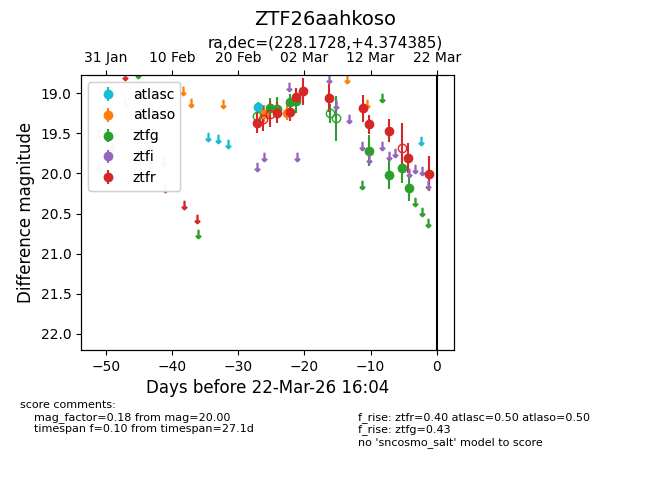
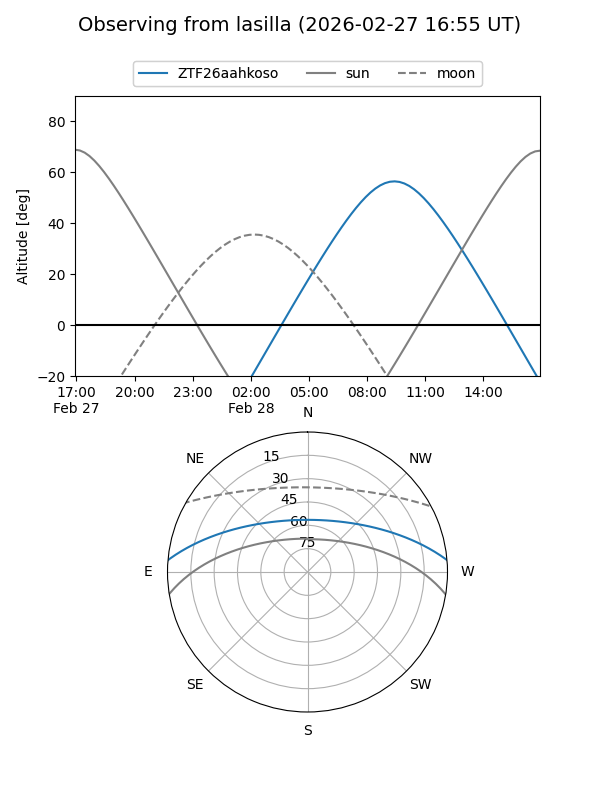
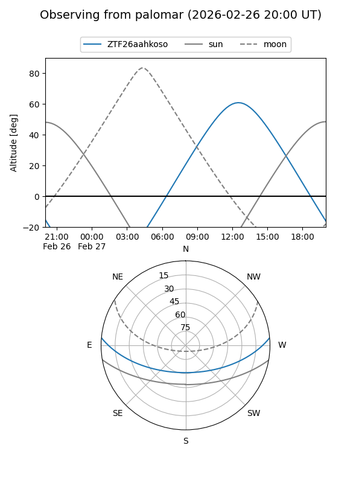
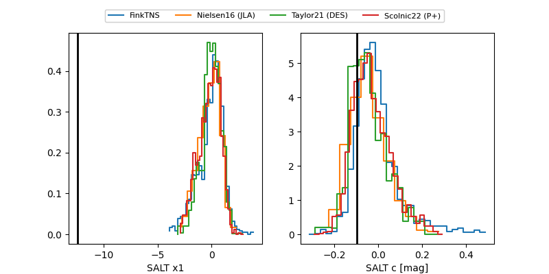

ZTF26aahkoso
Target ZTF26aahkoso at 2026-03-22 16:06
Aliases and brokers:
FINK: link
Lasair: link
ALeRCE: link
alt names
ZTF26aahkoso (ztf,fink_ztf)
Coordinates:
equatorial (ra, dec) = 228.1728,+4.37439
equatorial (HMS+DMS) = 15:12:41.47,+04:22:27.79
galactic (l, b) = (5.1914,+49.36706)
Flags:
Photometry:
last atlasc=19.18, atlaso=nan, ztfg=20.18, ztfr=20.00
1 atlasc, 3 atlaso, 8 ztfg, 11 ztfr detections
Lightcurve

Visibility


Additional plots
